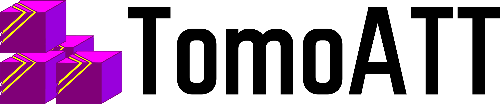
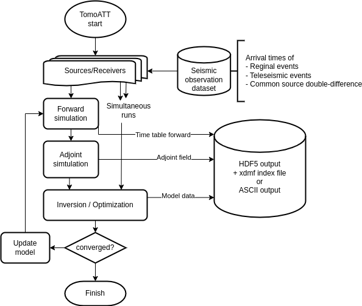
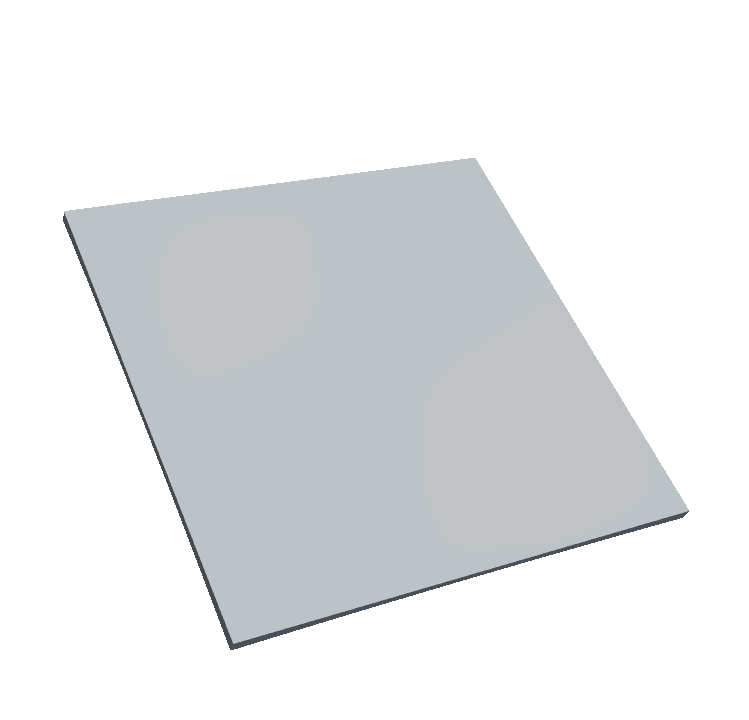
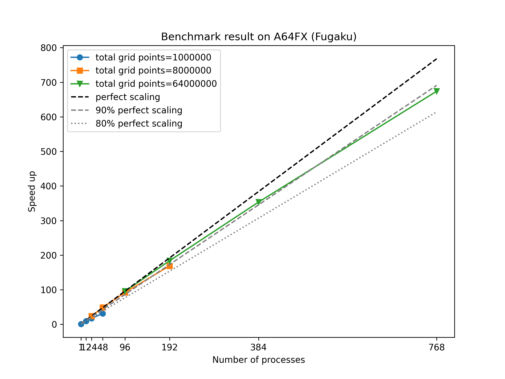
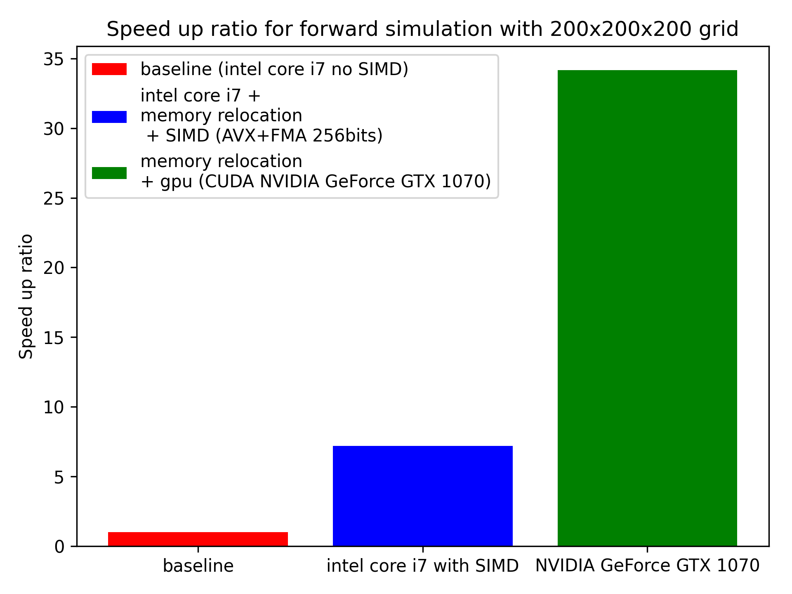

#

{kind=link}
TomoATT is a numerical library for adjoint-state travel-time tomography, which is developed for :
computing with a very large and fine forward grid,
large number of earthquake sources and stations dataset in
an efficient and scalable way on modern HPCs.
The implemented logics are on the following published articles: Ping Tong (2021), Jing Chen et. al.(2022) and Miles Detrixhe and Frédéric Gibou (2016).
Thanks to the efficiency of an eikonal equation solver, the computation of the travel-time is very fast and requires less amount of computational resources. As an input data for TomoATT is travel times at seismic stations, we can easily prepare a great amount of input data for the computation.
 
{kind=link}
{kind=link}
For modeling a very large and fine grid with numerous seismic events, this library applies 3-layer parallelization, which are:
layer 1: simulutaneous run parallelization (travel times for multiple seismic sources may be calculated simultaneously)
layer 2: subdomain decomposition (If the number of computational nodes requires too large memory, we can separate the domain into subdomains and run each subdomain in a separate compute node)
layer 3: sweeping parallelization (in each subdomain, sweeping layers are also parallelized)
The details of the parallelization method applied in this library are described in the paper Miles Detrixhe and Frédéric Gibou (2016).
The image below shows the benchmark result of TomoATT (elapse time for a forward simulation) on a single ~ 64 nodes of Fugaku supercomputer (A64FX processor), which shows a high parallel efficiency.

{kind=link}
Also, an optionzation for serial computation was also implemented in this library. Currently AVX, AVX2, AVX512 for intel processors and SVE for ARM processors are supported. CUDA implementation is now under development, which will be available in the future release.

{kind=link}
Regional events (sources within the global domain) and teleseismic events (sources outside the global domain) may be used for inversion.
Citation#
If you use TomoATT for your own research, please cite at least one of the following articles: